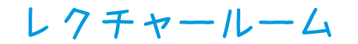
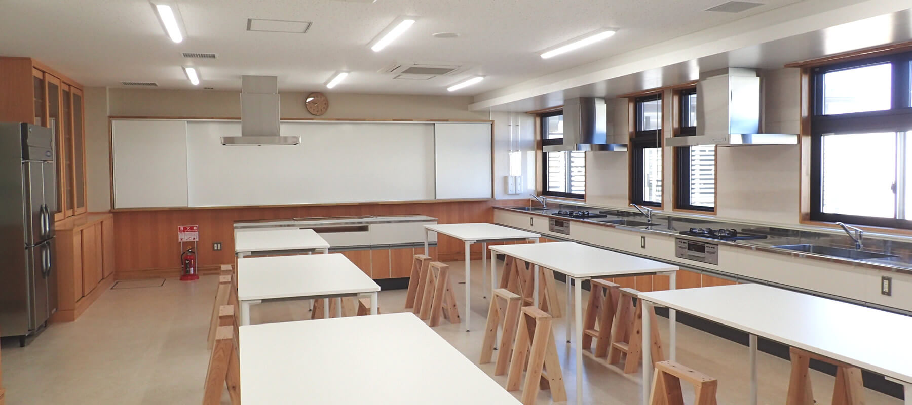

セミナー、講習、研修などにご利用いただけます。
※レクチャールームと実習室は間仕切りを収納して１部屋として利用することも可能です。
- 収容人数
- 約３０名
- 広さ
- 約６０㎡
- 備品
- ホワイトボード 折り畳みテーブル１０台（３人掛け） イス３０脚 プロジェクター１台
南三陸・海のビジターセンターでは、レクチャールームなどのスペースを無料で貸出ししております。
自然環境保護に関するセミナーや自然体験プログラムなどのイベントにご利用ください。
セミナー、講習、研修などにご利用いただけます。
※レクチャールームと実習室は間仕切りを収納して１部屋として利用することも可能です。

実験、工作、料理教室などにご利用いただけます。
※レクチャールームと実習室は間仕切りを収納して１部屋として利用することも可能です。


プログラム前の着替えやプログラム後のシャワーにご利用いただけます。
「南三陸・海のビジターセンター施設使用規則」をご覧いただき、南三陸・海のビジターセンターまでをお電話下さい。
※施設使用規則にそぐわない場合、使用をお断りする場合がございます。
南三陸・海のビジターセンター施設利用規程 （PDF 106KB）
南三陸・海のビジターセンター施設利用申請書（PDF 97kb）
南三陸・海のビジターセンター施設利用心得 （PDF 45KB）
［お問い合わせ］
電話：０２２６－２５－７６２２
メールでのお問い合わせはこちら